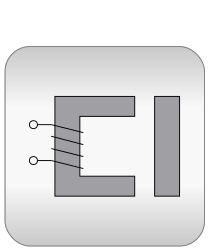
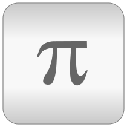

Package Modelica® is a standardized and free package that is developed together with the Modelica® language from the Modelica Association, see https://www.Modelica.org. It is also called Modelica Standard Library. It provides model components in many domains that are based on standardized interface definitions. Some typical examples are shown in the next figure:

For an introduction, have especially a look at:
This version of the Modelica Standard Library consists of
that are directly usable (= number of public, non-partial, non-internal and non-obsolete classes). It is fully compliant to Modelica Specification Version 3.2 Revision 2 and it has been tested with Modelica tools from different vendors.
Licensed by the Modelica Association under the 3-Clause
BSD License
Copyright © 1998-2018, ABB, AIT, T. Bödrich, DLR, Dassault
Systèmes AB, ESI ITI, Fraunhofer, A. Haumer, C. Kral,
Modelon, TU Hamburg-Harburg, Politecnico di Milano, XRG Simulation
and main
contributors.
This Modelica package is free software and the use is completely at your own risk; it can be redistributed and/or modified under the terms of the 3-Clause BSD license. For license conditions (including the disclaimer of warranty) visit https://modelica.org/licenses/modelica-3-clause-bsd.
Modelica® is a registered trademark of the Modelica Association.
| Name | Description |
|---|---|
| User's Guide | |
| Library of basic input/output control blocks (continuous, discrete, logical, table blocks) | |
| Library of basic input/output control blocks with Complex signals | |
| Library of hierarchical state machine components to model discrete event and reactive systems | |
| Library of electrical models (analog, digital, machines, multi-phase) | |
|  Magnetic | Library of magnetic models |
| Library of 1-dim. and 3-dim. mechanical components (multi-body, rotational, translational) | |
| Library of 1-dim. thermo-fluid flow models using the Modelica.Media media description | |
| Library of media property models | |
| Library of thermal system components to model heat transfer and simple thermo-fluid pipe flow | |
| Library of mathematical functions (e.g., sin, cos) and of functions operating on vectors and matrices | |
| Library of complex mathematical functions (e.g., sin, cos) and of functions operating on complex vectors and matrices | |
| Library of utility functions dedicated to scripting (operating on files, streams, strings, system) | |
|  Constants | Library of mathematical constants and constants of nature (e.g., pi, eps, R, sigma) |
| Library of icons | |
| SIunits | Library of type and unit definitions based on SI units according to ISO 31-1992 |